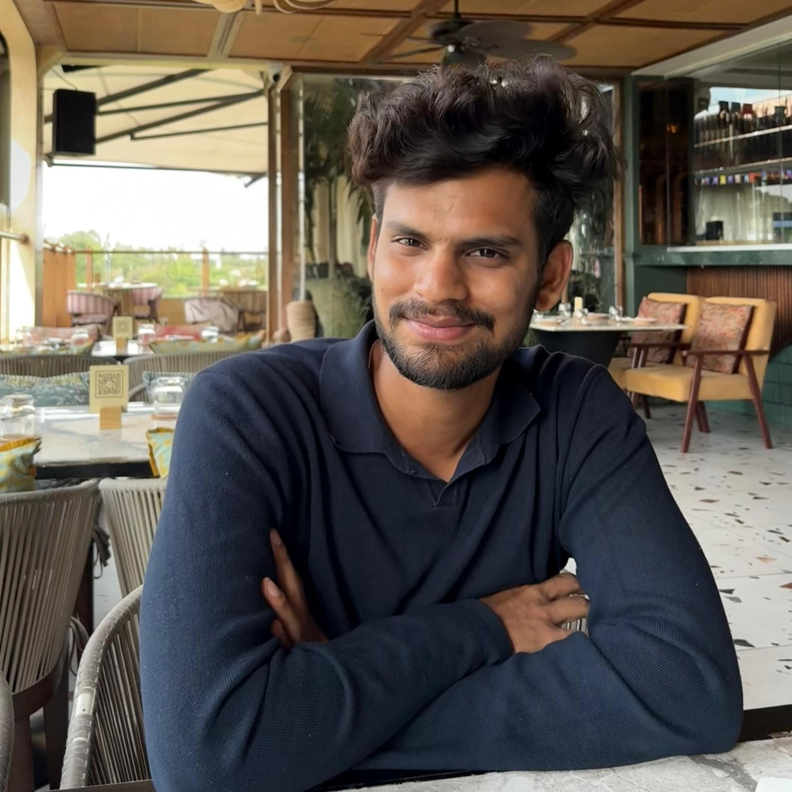

Shrivatsa
R D.
I work at the intersection of systems thinking and mechanical engineering — translating requirements into physical systems, interfaces, data-driven decisions and manufacturable hardware.
My experience spans aerospace ground-support equipment, aircraft maintenance analytics, production operations and product development. I enjoy problems where the answer is not just a better part, but a better system: understanding requirements, mapping interfaces and constraints, evaluating trade-offs, and carrying the solution through CAD, analysis, documentation and implementation.
Work
Experience
Aerospace GSE, production operations, product development and engineering work across different environments.
Projects
Case studies built around requirements, systems, analysis, decisions and outcomes.
Designs
Mechanical systems and components — explored through multiple CAD views.
Education
Mechanical engineering, systems engineering and focused technical learning.
Skills
CAD, simulation, data, manufacturing and engineering analysis tools.
Contact
Resume, professional profile and direct contact details.